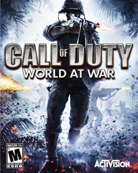

Call of Duty Titles with Zombies
Below, in chronolgoical order, is a list of every Call of Duty game that has a Zombies gamemode with some general information about each.
World at War
- Release Date: November 11, 2008
- Copies Sold: 17.66 Million
- Maps and DLCs:
- Nacht der Untoten
- Verruckt (Map Pack 1)
- Shi No Numa (Map Pack 2)
- Der Riese (Map Pack 3)
Call of Duty: World at War is a 2008 first-person shooter video game developed by Treyarch and published by Activision. It was released for Microsoft Windows, the PlayStation 3, Wii and Xbox 360 in November 2008. It is the fifth main installment of the Call of Duty series and returns the setting to World War II. The game is also the first title in the Black Ops story line. World at War received ports featuring different storyline versions, while remaining in the World War II setting, for the Nintendo DS and PlayStation 2. It was the first game in the series to feature the zombies mode featured in later sequels. A Windows Mobile version was also made available by Glu Mobile.
Black Ops

- Release Date: November 9, 2010
- Copies Sold: 30.99 Million (Most)
- Maps and DLCs:
- Kino der Toten
- "Five"
- Ascension (First Strike DLC)
- Call of the Dead (Escalation DLC)
- Shangri-La (Annihilation DLC)
- Moon (Rezurrection DLC)
Call of Duty: Black Ops is a 2010 first-person shooter video game developed by Treyarch and published by Activision. It was released worldwide in November 2010 for Microsoft Windows, the PlayStation 3, Xbox 360, and Wii, with a separate version for Nintendo DS developed by n-Space. Aspyr later released the game for OS X in September 2012. It is the seventh title in the Call of Duty series and the third to be developed by Treyarch. It serves as the sequel to Call of Duty: World at War.
Black Ops 2

- Release Date: November 12, 2012
- Copies Sold: 29.59 Million
- Maps and DLCs:
- TranZit
- Nuketown Zombies
- Die Rise (Revolution DLC)
- Mob of the Dead (Uprising DLC)
- Buried (Vengeance DLC)
- Origins (Apocalypse DLC)
Call of Duty: Black Ops II is a 2012 first-person shooter video game developed by Treyarch and published by Activision. It was released for Microsoft Windows, PlayStation 3, and Xbox 360 on November 12, 2012, and for the Wii U on November 18 in North America and November 30 in PAL regions. Black Ops II is the ninth game in the Call of Duty franchise of video games, a sequel to the 2010 game Call of Duty: Black Ops and the first Call of Duty game for the Wii U. A corresponding game for the PlayStation Vita, Call of Duty: Black Ops: Declassified, was developed by nStigate Games and also released on November 13.
Advanced Warfare

- Release Date: November 4, 2014
- Copies Sold: 21.78 Million
- Maps and DLCs:
- Outbreak (Havoc DLC)
- Infection (Ascendance DLC)
- Carrier (Supremacy DLC)
- Descent (Reckoning DLC)
Call of Duty: Advanced Warfare is a 2014 first-person shooter video game published by Activision. The eleventh major installment in the Call of Duty series, the game was developed by Sledgehammer Games for Microsoft Windows, PlayStation 4 and Xbox One, while High Moon Studios developed the versions released on PlayStation 3 and Xbox 360, and Raven Software developed the game's multiplayer and the Exo-Zombies mode. Advanced Warfare was the first Call of Duty title to be developed primarily by Sledgehammer, following the supporting work the studio did on Call of Duty: Modern Warfare 3 alongside Infinity Ward in 2011. Though the game was released on November 4, 2014, a special edition entitled the Day Zero Edition, which came with bonus in-game content, was released on November 3 for people who pre-ordered the game
Black Ops 3

- Release Date: November 6, 2015
- Copies Sold: 26.72 Million
- Maps and DLCs:
- Shadows of Evil
- The Giant
- Der Eisendrache (Awakening DLC)
- Zetsubou No Shima (Eclipse DLC)
- Gorod Krovi (Descent DLC)
- Revelations (Salvation DLC)
Call of Duty: Black Ops III is a 2015 first-person shooter video game, developed by Treyarch and published by Activision. It is the twelfth entry in the Call of Duty series and the sequel to the 2012 video game Call of Duty: Black Ops II. It was released on Microsoft Windows, PlayStation 4, and Xbox One on November 6, 2015. A feature-limited version developed by Beenox and Mercenary Technology that only supports multiplayer modes was released on PlayStation 3 and Xbox 360 and was also the final Call of Duty title released on those platforms.
Infinite Warfare
- Release Date: November 4, 2016
- Copies Sold: 13.27 Million
- Maps and DLCs:
- Zombies in Spaceland
- Rave in the Redwoods (Sabotage DLC)
- Shaolin Shuffle (Continuum DLC)
- Attack of the Radioactive Thing (Absolution DLC)
- The Beast from Beyond (Retribution DLC)
Call of Duty: Infinite Warfare is a 2016 first-person shooter video game developed by Infinity Ward and published by Activision. It is the thirteenth installment in the Call of Duty series and was released worldwide for Microsoft Windows, PlayStation 4, and Xbox One on November 4, 2016. Development of Infinite Warfare began during 2014. It is the first title by Infinity Ward under the new three-year development cycle for the Call of Duty series. The game's campaign is centered around a battle for the Solar System, which the Settlement Defense Front (SDF), a hostile force who are the main antagonists, are attempting to take over. The player takes control of Lieutenant Nick Reyes of the Special Combat Air Recon (SCAR). They have their own transforming fighter, named "Jackal", that they can customize as well as a central hub ship named Retribution.
WWII

- Release Date: November 3, 2017
- Copies Sold: 19.82 Million
- Maps and DLCs:
- The Final Reich
- The Darkest Shore (The Resistence DLC)
- The Shadowed Throne (The War Machine DLC)
- The Tortured Path (United Front DLC)
- The Frozen Dawn (Shadow War DLC)
Call of Duty: WWII is a 2017 first-person shooter video game developed by Sledgehammer Games and published by Activision. It was released worldwide on November 3, 2017 for Microsoft Windows, PlayStation 4 and Xbox One. It is the fourteenth main installment in the Call of Duty series and the first title in the series to be set primarily during World War II since Call of Duty: World at War in 2008.
Black Ops 4
- Release Date: October 12, 2018
- Copies Sold: 3.5 Million (Least)
- Maps and DLCs:
- Voyage of Despair
- IX (Nine)
- Blood of the Dead
- Classified
- Dead of the Night (DLC 1)
- Ancient Evil (DLC 2)
- Alpha Omega (DLC 3)
- Tag der Toten (DLC 4)
Call of Duty: Black Ops 4 (stylized as Call of Duty: Black Ops IIII) is a 2018 multiplayer first-person shooter developed by Treyarch and published by Activision. It was released worldwide for Microsoft Windows, PlayStation 4, and Xbox One on October 12, 2018. It is a sequel to the 2015 game Call of Duty: Black Ops III, the fifth entry in the Black Ops sub-series, and the 15th installment in the Call of Duty series overall. Black Ops 4 is the first Call of Duty title without a traditional single-player campaign mode.
Black Ops: Cold War

- Release Date: November 13, 2020
- Copies Sold: 5.7 Million
- Maps and DLCs:
- Die Maschine
- Firebase Z
- Outbreak (Extra Gamemode)
Call of Duty: Black Ops Cold War is a 2020 first-person shooter video game developed by Treyarch and Raven Software and published by Activision. It was released worldwide on November 13, 2020, for Microsoft Windows, PlayStation 4, PlayStation 5, Xbox One, and Xbox Series X and S. It serves as the sixth installment in the Black Ops series, and the seventeenth installment in the overall Call of Duty series. The game is the second Call of Duty title since 2011's Modern Warfare 3 to be co-developed by two studios.